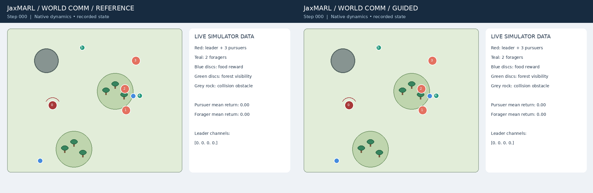
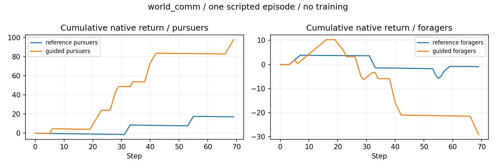
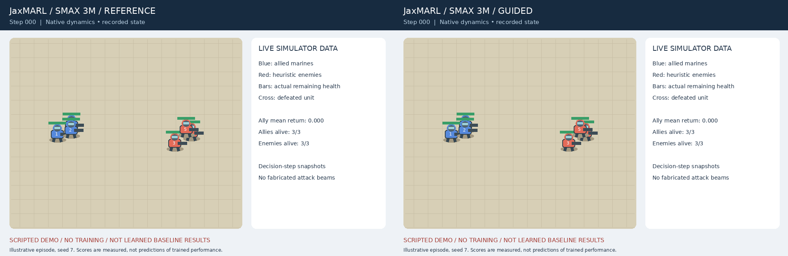
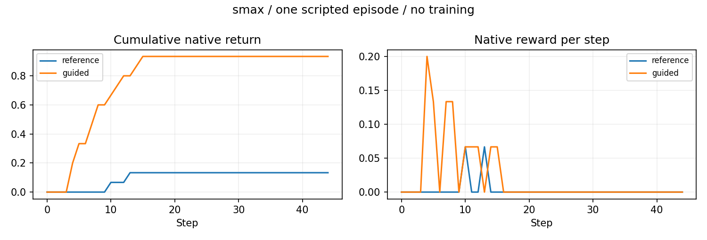
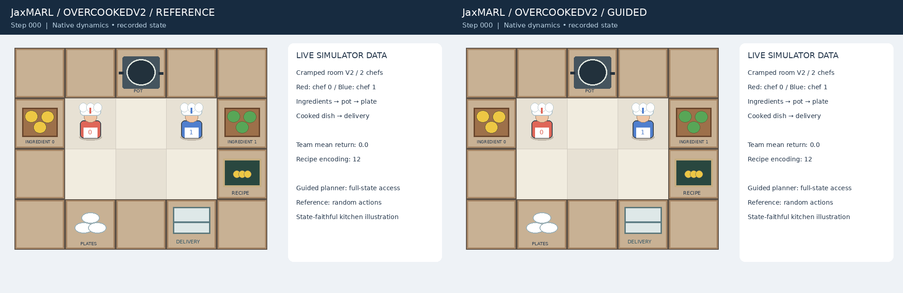
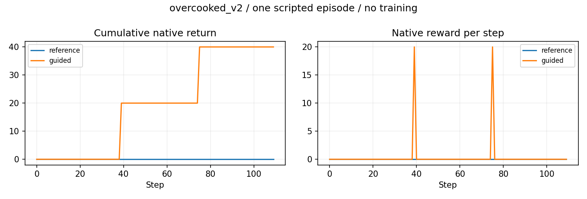
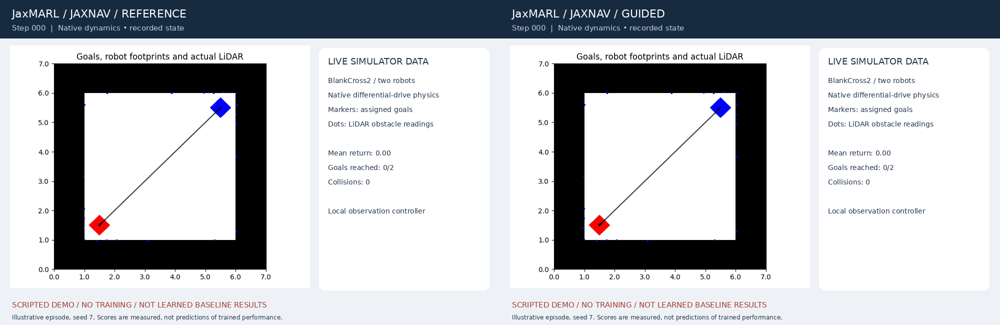
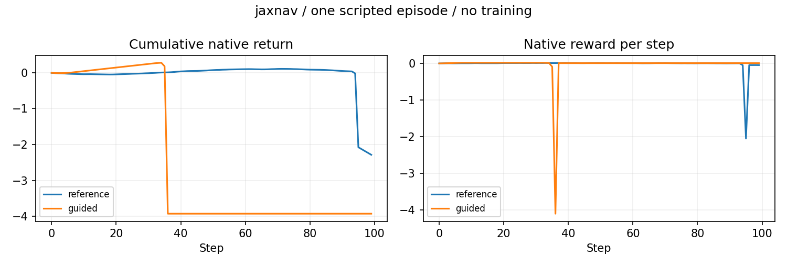

Main gallery · Provenance · Verification
Native MPE Simple World Comm: four pursuers, two foragers, food, obstacle and forests. Leader broadcasts a four-channel target-position code.
Left: reference (communication disabled). Right: guided script. Matched seed and reset.

Measured undiscounted episode returns — reference: pursuers 16.995, foragers -0.920 | guided: pursuers 97.743, foragers -29.013

Initial screenshot · Middle screenshot · Final screenshot · Raw metrics and state schema
Native SMAX 3m: three marines against three heuristic enemies. Upstream observation-based heuristic versus random valid ally actions. Frames are decision-step snapshots, not interpolated combat ticks.
Left: reference (random legal actions). Right: guided script. Matched seed and reset.

Measured undiscounted episode returns — reference: 0.133 | guided: 0.933

Initial screenshot · Middle screenshot · Final screenshot · Raw metrics and state schema
Native OvercookedV2 cramped_room_v2 (contextual kitchen rendering and original renderer screenshots): two chefs, multiple ingredients, recipe indicator, cooking and delivery. Full-state scripted task planner versus random actions. This illustration does not test decentralized partial-observation learning.
Left: reference (random legal actions). Right: guided script. Matched seed and reset.

Measured undiscounted episode returns — reference: 0.000 | guided: 40.000

Initial screenshot · Middle screenshot · Final screenshot · Raw metrics and state schema
Native JaxNav BlankCross2: differential-drive robots crossing toward opposing goals. Local goal-bearing controller with LiDAR braking versus random actions.
Left: reference (random legal actions). Right: guided script. Matched seed and reset.

Measured undiscounted episode returns — reference: -2.287 | guided: -3.925

Initial screenshot · Middle screenshot · Final screenshot · Raw metrics and state schema